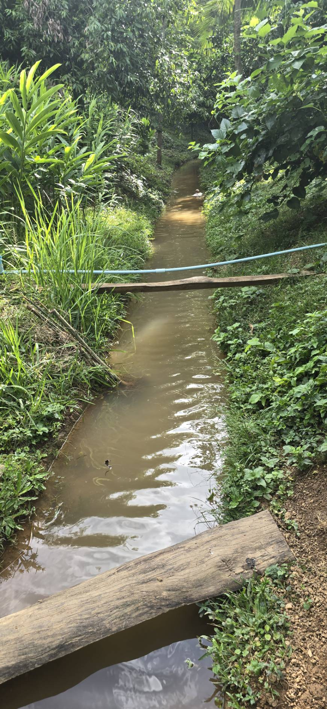
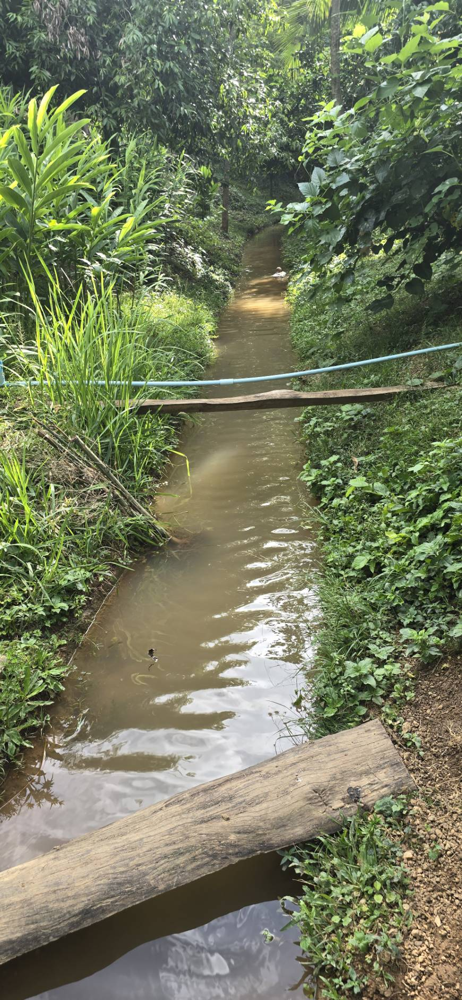

เกี่ยวกับ ทีพี แลนด์ ฟาร์ม
ทีพี แลนด์ ฟาร์ม เป็นฟาร์มเกษตรอินทรีย์ที่มุ่งเน้นการปลูกพืชผักปลอดสารพิษ ด้วยความใส่ใจในทุกๆขั้นตอนการผลิต เพื่อให้ได้ผลผลิตที่มีคุณภาพสูงสุด และปลอดภัยต่อผู้บริโภค เรามีประสบการณ์ในการทำเกษตรอินทรีย์มากกว่า 10 ปี และเป็นผู้นำเบิกในการนำเทคโนโลยีสมัยใหม่มาใช้ในการเกษตร เพื่อพัฒนาผลผลิตให้มีคุณภาพและเป็นมิตรกับสิ่งแวดล้อม
วิสัยทัศน์
เราต้องการสร้างระบบเกษตรที่ยั่งยืนและเป็นมิตรกับสิ่งแวดล้อม เพื่อตอบการที่ปลอดภัยและมีคุณค่าทางโภชนาการสูง
พันธกิจ
ส่งเสริมการทำเกษตรอินทรีย์และการบริโภคอาหารปลอดสารพิษ เพื่อสุขภาพที่ดีของผู้บริโภคและสิ่งแวดล้อมที่ยั่งยืน


 
